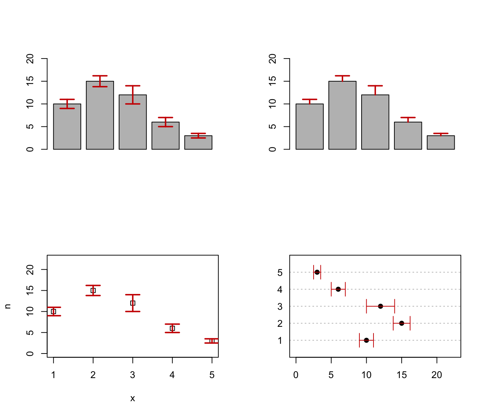

Draw error bars on a plot
errorBars.RdDraw error bars at x from upper to lower. If horizontal = FALSE (default)
bars are drawn vertically, otherwise horizontally.
Arguments
- x
A vector of values where the bars must be drawn.
- upper
A vector of upper values where the bars must end.
- lower
A vector of lower values where the bars must start.
- width
A value specifying the width of the end-point segment.
- code
An integer code specifying the kind of arrows to be drawn. For details see
arrows.- angle
A value specifying the angle at the arrow edge. For details see
arrows.- horizontal
A logical specifying if bars should be drawn vertically (default) or horizontally.
- ...
Further arguments are passed to
arrows.
Examples
par(mfrow=c(2,2))
# Create a simple example dataset
x <- 1:5
n <- c(10, 15, 12, 6, 3)
se <- c(1, 1.2, 2, 1, .5)
# upper and lower bars
b <- barplot(n, ylim = c(0, max(n)*1.5))
errorBars(b, lower = n-se, upper = n+se, lwd = 2, col = "red3")
# one side bars
b <- barplot(n, ylim = c(0, max(n)*1.5))
errorBars(b, lower = n, upper = n+se, lwd = 2, col = "red3", code = 1)
#
plot(x, n, ylim = c(0, max(n)*1.5), pch = 0)
errorBars(x, lower = n-se, upper = n+se, lwd = 2, col = "red3")
#
dotchart(n, labels = x, pch = 19, xlim = c(0, max(n)*1.5))
errorBars(x, lower = n-se, upper = n+se, col = "red3", horizontal = TRUE)
